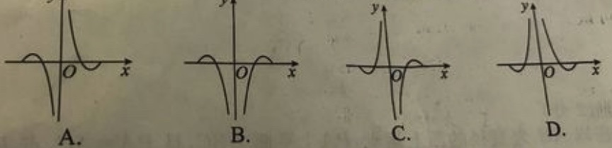

【综合函数】 20190413A
已知f(2x)=(2sin2x−1)ln(4x2),则函数f(x)的部分图像大致为

小蒋的解答:
🍋知识点1: 复合函数
题目是f(2x),是个复合函数,通过换元把f(x)表示出来
设t=2x,则f(t)=(2sin2(t2)−1)ln(4(t2)2)
整理得:f(t)=(2sin2(t2)−1)lnt2
还是把t写成x的形式比较舒服:f(x)=(2sin2(x2)−1)lnx2
🍋知识点2: 和差倍角公式
cos2θ=1−2sinθ
可以得到:2sin2(x2)−1=−cosx
即:f(x)=−cosxlnx2
🍋知识点3: 函数奇偶性
f(−x)=−cos(−x)ln(−x)2=−cosxlnx2=f(x),说明f(x)为偶函数,排除A,C
🍋知识点4: 求导
或者直接特殊值x=0.00001代入,得到cosx≈1,lnx2≈−∞,
此时f(x)=−cosxlnx2≈+∞,最后,选D